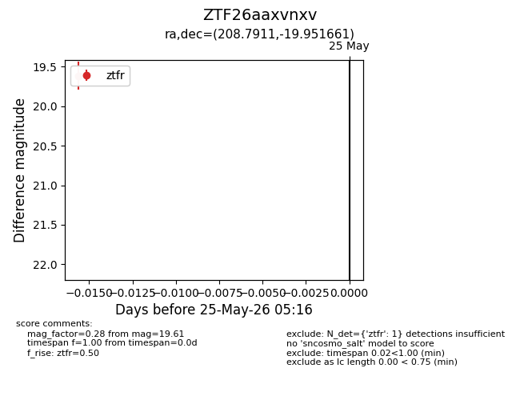
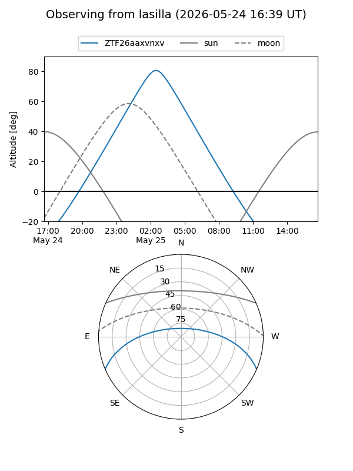
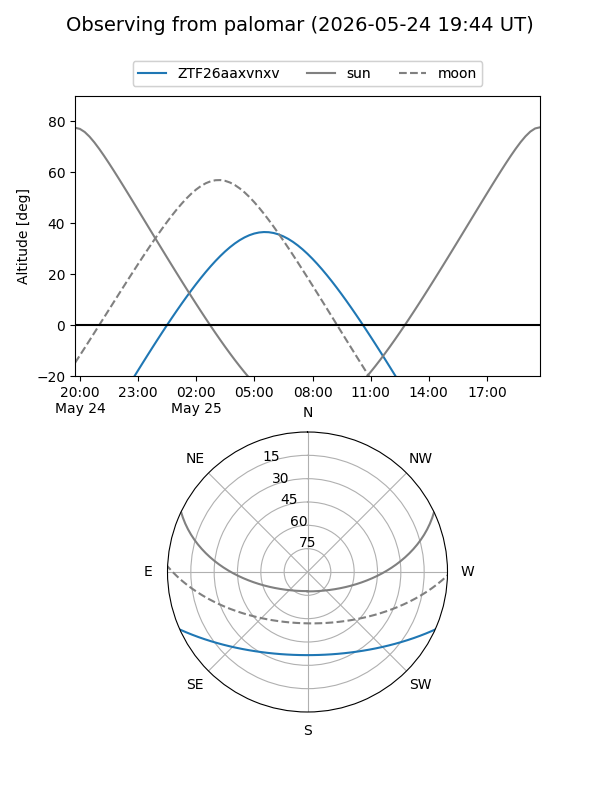

ZTF26aaxvnxv
Target ZTF26aaxvnxv at 2026-05-25 05:17
Aliases and brokers:
lsst-FINK: link
lsst-Lasair: link
lsst-ALeRCE: link
ztf-FINK: link
ztf-Lasair: link
ztf-ALeRCE: link
alt names
ZTF26aaxvnxv (ztf,fink_ztf)
Coordinates:
equatorial (ra, dec) = 208.7911,-19.95166
equatorial (HMS+DMS) = 13:55:09.87,-19:57:05.98
galactic (l, b) = (322.7530,+40.45456)
Flags:
Photometry:
last ztfr=19.61
1 ztfr detections
Lightcurve

Visibility


Additional plots